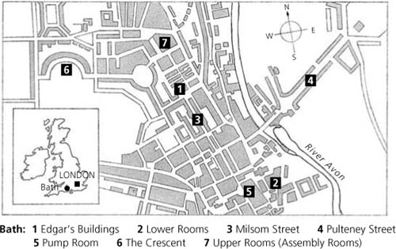

Listen to Part 1:
Chương 2: Catherine có bạn mới
Chương 4: Một buổi vũ hội ở Phòng trên
Chương 5: ‘Tại sao anh lại nói dối tôi?’
Chương 6: Catherine và nhà Tilney
Listen to Part 2:
Chương 8: Đại úy Frederick Tilney
Chương 11: ‘Cô Morland thân mến!’
Chương 14: Catherine trở về nhà
Chương 15: ‘Cô sẽ cưới tôi chứ?’
